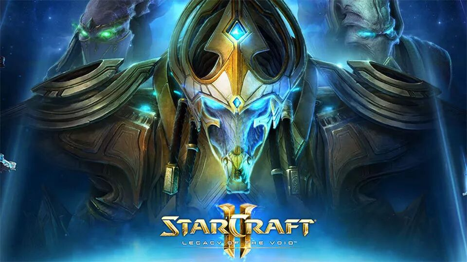
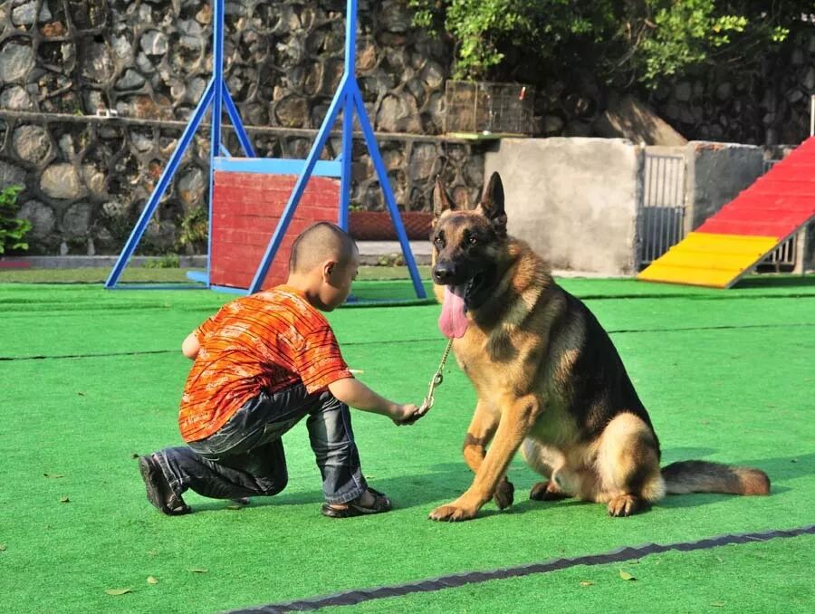
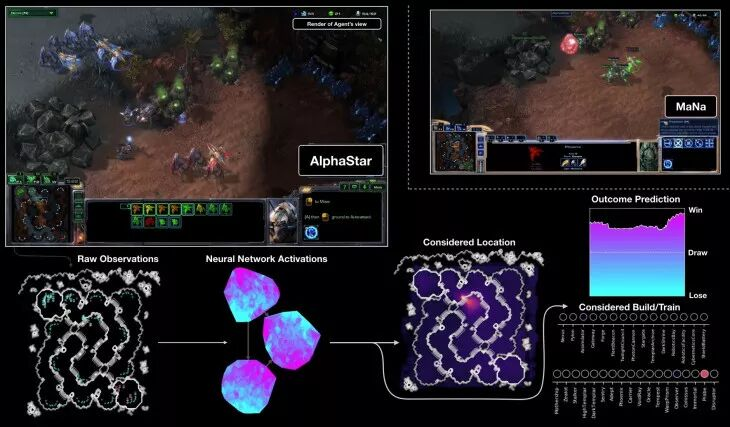
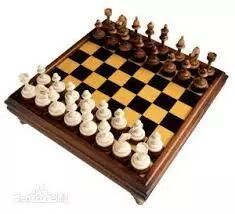
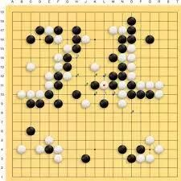
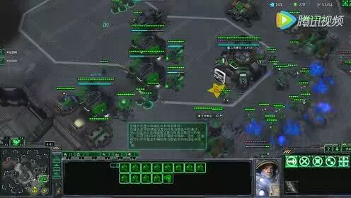
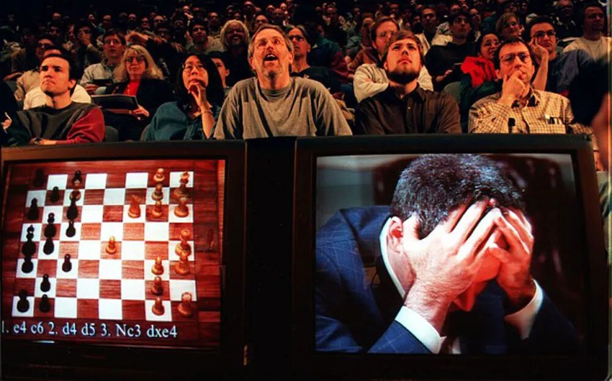
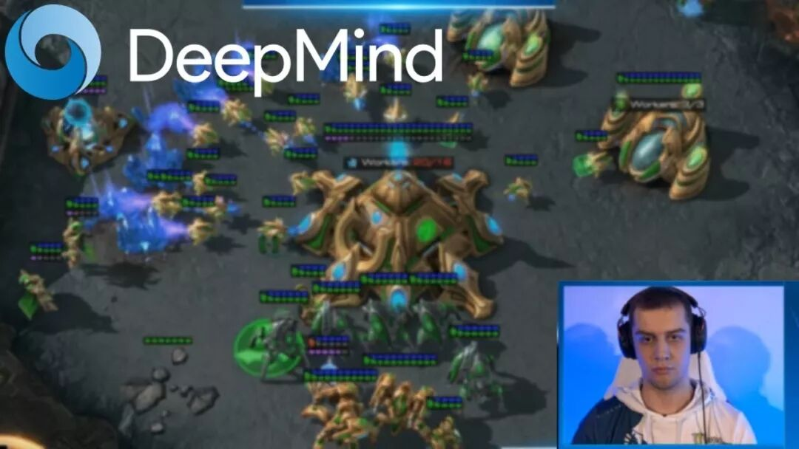

就在三天前，Deepmind所训练出的AI AlphaStar与顶尖的《星际争霸2》高手做了对决。结果是10-1，AlphaStar大胜。
虽说是10：1这样悬殊的比分，但是人类输的前10场其实都是录播，最后一场人类赢的是直播。由于AlphaStar并不会改变自己的作战策略，所以要是从这里开始直接再比10场，肯定人类会连赢十场。因此在我看来，其实两边算是打平了。甚至人类略胜一筹。
我估计是Deepmind通过前十场的测试，觉得他们训练出的AI已经足够强大，可以完胜人类，因此才宣布了这次直播。但是他们的AI还没有完全调试好，结果被人类高手找到了一个AI的漏洞加以利用。我是感觉Deepmind的两个工程师当时的脸上是略微有些尴尬的。
不过尽管AlphaStar还有些许漏洞可以被利用，离它彻底打败最顶尖的职业选手其实已经不远了。尤其是在它作弊式微操的加持下，对人类选手其实是有及其巨大的天然优势的。
AlphaStar的原理
AlphaStar的训练，其背后基于的是机器学习中的强化学习的训练框架。
所谓的强化学习，就跟训狗差不多。
狗平时就在那边乱跑乱动，也不知道你喜欢什么，要让它干什么。但是要是每次它做了什么让你开心的事情，你给奖励它一下，给它喂个骨头啥的，它下次就会更多的去做类似的事情。
比如说每次你回家的时候，要是狗在门口迎接你，你就给它一个奖励。要是这只狗足够聪明，很快它就每次都会在家门口迎接你了。
要是这个狗1）学习能力无限强 2）见过所有的可能性，你理论上应该就可以训练它做任何事情。

当然你要训练狗帮你打赢星际，那基本不太可能。这主要是因为我们的1） 学习能力无限强 2）见过所有的可能性的这两个假设，对于所有的狗来说并不满足。
而当这里的狗换成了AI了之后就不一样了。随着AI背后的架构越来越合理，它的潜在的学习能力会越来越强。而随着计算资源的不断变强，我们也可以让AI接触过的可能性越来越多。随着这两个条件越来越成熟，AI能解决的问题的难度也会越来越高。

从国际象棋到围棋到星际争霸
在2000年以前的时候，AI还只能解决一些相对简单的问题，比如国际象棋。
之所以国际象棋相对比较容易解决，是因为在国际象棋中每一个棋局状态下，下一步能走的棋招相对比较少。也就在几十个招的量级，而且其中大部分的可能的棋招可以被轻松地筛选掉。所以要想让AI经历过绝大部分的棋局状态，其实是相对简单的。

围棋相对来说就要难多了，它的每一步都有19*19=361种可能性，而且在围棋的这些可能性中，其实并没有一些简单地去判断一个要比另一个更好的简单的方法。一招棋的好坏，就算是职业棋手，有的时候也很难说得清楚。往往要到终盘的时候，才能去盖棺定论。

而星际争霸这样的游戏，对于计算机来说，要比围棋甚至都难。之所以如此，是因为星际争霸这样的游戏它的可能性太多了。
星际争霸中，可以有那么多的单位，每个单位都有独特的技能，互相之间有那么多的连锁反应。要想让计算机有效地把所有的这些情况都学会，其难度绝对是好几个数量级以上的。为此需要采用大量的辅助手段来提升训练的速度，同时降低整体训练的难度。

历史的重演
当然我记得当年的IBM的深蓝，在对阵当时的国际象棋冠军的时候，一开始也曾经输过。而当时国际象棋冠军的胜利方法，和今天职业选手战胜AlphaStar的方式很类似。
当时的人类国际象棋冠军，一开始走了一步正常棋手不会走的基本上没什么用的棋招。但是由于AI从来没有见过这个招，所以它并不知道如何应对。于是就输了。
当然到今天来看，AI再也不会输给人类的国际象棋冠军了。这就好像计算器的速度再也不会输给人类的心算了一样，被大家当做理所当然的事情。
这并不是说人类不行了，而只是人类的大脑在计算这类问题的时候，速度要远比计算机慢，精确度差而已。因此没有办法像AI一样能够精确地区分每个棋招间的细微差异。

AI之所以今天能够战胜星际的职业选手，也只不过是它的精度比人类更高，判断速度更快而已。它可以在一瞬间判断出一大堆兵混战的时候，哪个兵要往后退，哪些兵攻击哪些敌人，哪些兵可以被牺牲等等决策。
它也可以在交战之前，瞬间精确地判断出两边的实力差距，从而算出迎战与否。而人类再怎么准确，也没法把所有的这些都精确地计算出来，并且比机器更快地做出决策。
星际的职业选手在直播的时候可以战胜AI，其实用的是跟当年的国际象棋冠军类似的方法，打出了一些当前AI还没有见过的打法。但是工程师只要让AI回去好好见一下这些招，尝试出应对的策略，就可以弥补这个漏洞。
不过星际的情况跟当年国际象棋的情况还有很多的不同。国际象棋和围棋中之所以人类完全无法取胜，是因为当前的AI不仅仅预测了什么是最佳的行动，它还真的模拟了做了这些行动后未来的各种情形实际情况。
目前来说，星际还做不到模拟未来的各种情形，因为可能的情况过于多了。而且国际象棋和围棋都是基于完全信息，即对弈的两方都能知道所有的棋子摆放，而星际中则不是，因此AI对此的预测会更加不准确。
综上所述，星际中AI要想彻底战胜人类，尤其是在真的限制手速的情况下（现在的AlphaStar所做出的操作很明显不是人类所能做出的操作），要从战略上战胜人类，还有很长的路要走。
